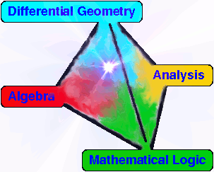

Paul Martin Home
Research
Recent papers and preprints
A tilting homepage
Leeds algebra group homepage
Research group links page
Statistical Mechanics pages
Quantum information pages
People
Seminar series
Leeds Stat Mech Discussion Group
o
LINK (Leeds ... Knots)
LYLT (Leeds-York Lie Theory)
Leeds Algebra Seminar
OLD Leeds Algebra Seminar page
;
NEW page (Faber's page)
Grad School
My Leeds Algebra Grad Course (2008/11) including BOOK LINKS
Projects
Hall of Fame
Selected Meetings
Leaps through Loops (Leeds 2019)
Workshop on higher gauge theory (Leeds 2018)
Yang-Baxter equations (Cardiff 2016)
Modelling Topological Phases (Leeds 2016)
THE SUMMER OF REPRESENTATION THEORY AT LEEDS
Representation Theory 2015 (Mittag-Leffler)
"Physics and Representation Theory" Conference-Workshop series.
Workshop on Combinatorial Physics (Cardiff 2013)
Diagram Algebras and Related Topics, Stuttgart 2014
Diagram Algebras and Related Topics, Okinawa 2010
Advanced CFT and Applications (IHP 2011)
"Algebraic Representation Theory", Conference Uppsala 2011
OLDER
Assorted rough seminar notes/transcripts
Funding
My Xfig Library
(work in progress!)